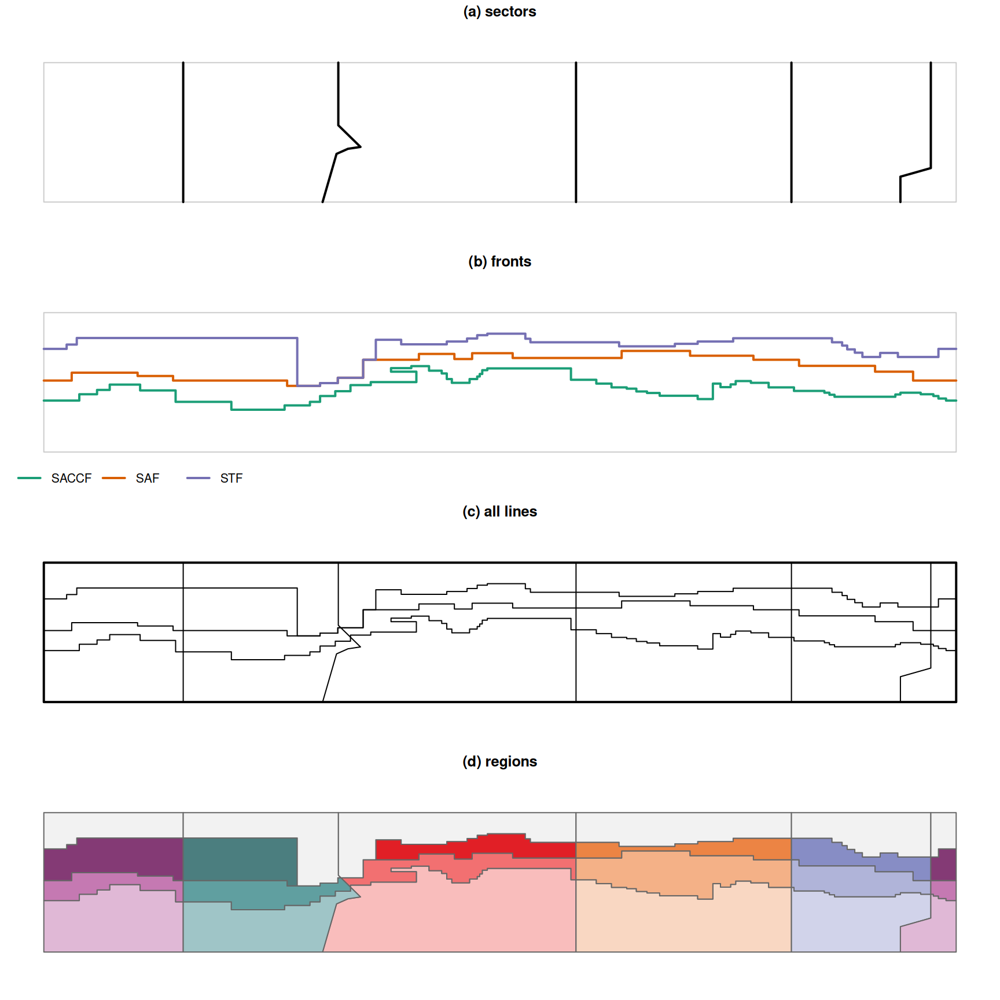

Code
## sector lines, as in data-raw/munge-sectors05.R
minlat <- -85; maxlat <- -30
s <- data.frame(lon = c(-125, -125, -70, -64.5, -60, -55.054477039271191, -63.799776827053591, -63.799776827053591,
30, 30, 115, 115, 158, 158, 170, 170, 170),
lat = c(minlat, maxlat, minlat, -66, -64, -63.260598133971456, -54.721070105901589, maxlat,
minlat, maxlat, minlat, maxlat, minlat, -75, -71.60, -47.50, maxlat),
id = c(1, 1, rep(2, 6), 3, 3, 4, 4, rep(5, 5)))
sectors <- st_sfc(lapply(split(s, s$id), \(d) st_linestring(cbind(d$lon, d$lat))))
load("../data-raw/zones.Rdata")
fronts <- st_geometry(zones)
domain <- st_sfc(st_linestring(cbind(c(-180, 180, 180, -180, -180), c(minlat, minlat, maxlat, maxlat, minlat))))
op <- par(mfrow = c(4, 1), mar = c(0.5, 0.5, 1.5, 0.5))
lim <- list(xlim = c(-180, 180), ylim = c(minlat, maxlat))
plot(domain, col = "grey80", xlim = lim$xlim, ylim = lim$ylim, main = "(a) sectors")
plot(sectors, add = TRUE, lwd = 2)
plot(domain, col = "grey80", main = "(b) fronts")
fcol <- c("#1b9e77", "#d95f02", "#7570b3")
plot(fronts, add = TRUE, lwd = 2, col = fcol)
legend("bottomleft", legend = c("SACCF", "SAF", "STF"), col = fcol, lwd = 2, bty = "n", horiz = TRUE)
plot(domain, lwd = 2, main = "(c) all lines")
plot(sectors, add = TRUE); plot(fronts, add = TRUE)
ll <- st_set_crs(measo_regions06_ll, NA) ## planar, as in (a)-(c)
plot(st_geometry(ll), col = ifelse(is.na(ll$fill), "grey95", ll$fill),
border = "grey40", main = "(d) regions")
par(op)